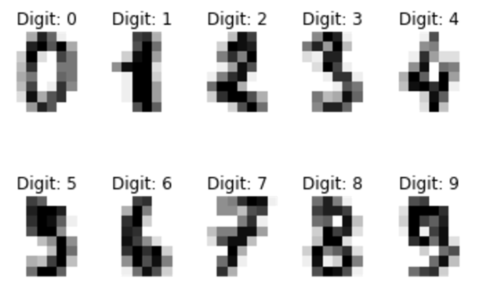
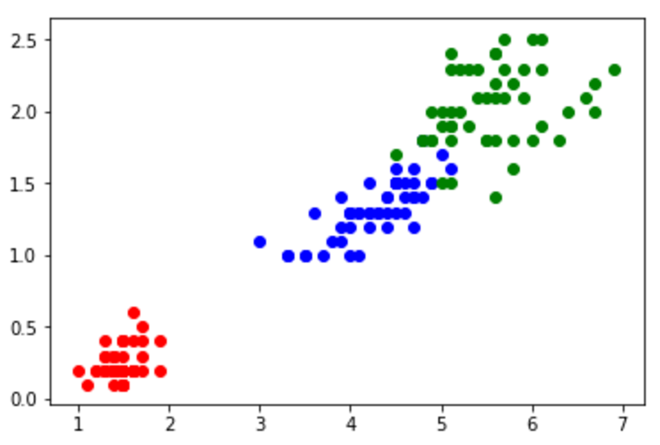

ここでは、機械学習で利用するデータセットを紹介する。
パッケージの導入
このブログにある Python コードを実行するためのパッケージをインストールする。
1
| pip install jupyter scikit-learn matplotlib scipy
|
実行環境は Jupyter Notebook を想定。実行方法は jupyter notebook 。
matplotlib の使い方は以下を参照。
digits データセット
digits データセットは手書き数字のデータセットで、8x8 ピクセルのモノクロ画像 1,797 枚。
1
2
3
4
5
6
7
8
9
10
11
12
13
14
15
16
17
18
19
20
21
22
23
24
25
26
27
28
29
30
31
32
33
| import matplotlib.pyplot as plt
from sklearn import datasets
digits = datasets.load_digits()
type(digits)
dir(digits)
type(digits.DESCR)
type(digits.data)
type(digits.data)
print(digits.data.shape)
type(digits.images)
print(digits.images.shape)
print(digits.data == digits.images.reshape(digits.images.shape[0], -1))
type(digits.target)
print(digits.target.shape)
type(digits.target_names)
print(digits.target_names)
plt.figure(1)
for label, img in zip(digits.target[:10], digits.images[:10]):
plt.subplot(2, 5, label + 1)
plt.axis('off')
plt.imshow(img, cmap=plt.cm.gray_r, interpolation='nearest')
plt.title('Digit: {0}'.format(label))
plt.show()
|

iris データセット
iris データセットは植物の「あやめ」に関するデータセット。
「萼片（がくへん）の長さ」「萼片の幅」「花びらの長さ」「花びらの幅」に関する特長量と、アヤメの種類（0:setosa、1:versicolor、2:virginica）の値を持つ 50 個のデータセットである。
1
2
3
4
5
6
7
8
9
10
11
12
13
14
15
16
17
18
19
20
21
22
23
24
25
26
27
28
29
30
31
32
33
34
35
36
37
| import numpy as np
import matplotlib.pyplot as plt
from sklearn import datasets
iris = datasets.load_iris()
type(iris)
dir(iris)
type(iris.DESCR)
type(iris.data)
type(iris.feature_names)
print(iris.feature_names)
type(iris.target)
type(iris.target_names)
print(iris.target_names)
plt.figure(1)
features = iris.data
target = iris.target
target_names = iris.target_names
labels = target_names[target]
setosa_petal_length = features[labels == 'setosa', 2]
setosa_petal_width = features[labels == 'setosa', 3]
setosa = np.c_[setosa_petal_length, setosa_petal_width]
versicolor_petal_length = features[labels == 'versicolor', 2]
versicolor_petal_width = features[labels == 'versicolor', 3]
versicolor = np.c_[versicolor_petal_length, versicolor_petal_width]
virginica_petal_length = features[labels == 'virginica', 2]
virginica_petal_width = features[labels == 'virginica', 3]
virginica = np.c_[virginica_petal_length, virginica_petal_width]
plt.scatter(setosa[:, 0], setosa[:, 1], color='red')
plt.scatter(versicolor[:, 0], versicolor[:, 1], color='blue')
plt.scatter(virginica[:, 0], virginica[:, 1], color='green')
plt.show()
|

オリジナルデータを CSV で扱う
CSV形式のデータを取り扱う場合、基本的に以下の4通りある。
- テキストファイル読み込む
- Python csv モジュールを使う
- NumPy モジュールを使う
- pandas モジュールを使う